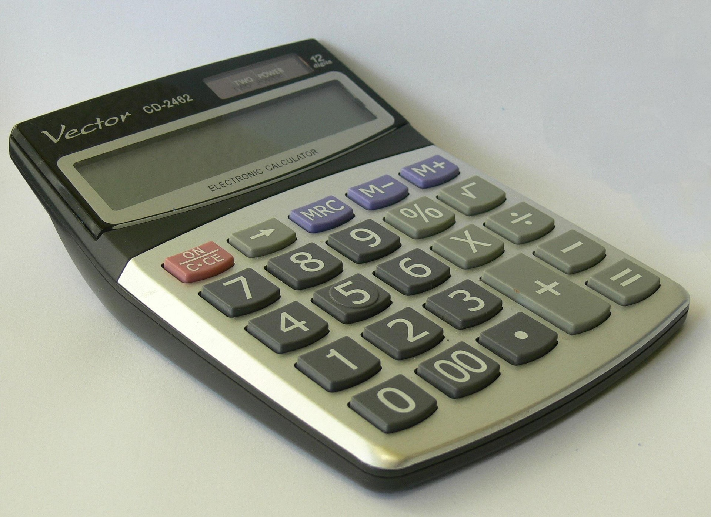

商業科目で1番最初に学ぶ。一定のルールに従って、帳簿に記録、計算、整理する科目です。※簿記を日本に普及したのは福沢諭吉
パソコンを使用しExcelで関数、Wordで文書作成を学ぶ科目です。
製品を作るのにかかった費用を計算し、価格確定や利益を算出する科目です。※工業簿記とも呼ばれている 原価計算の三要素・・・材料費、労務費、経費
会社で必要な法律やルール、契約には何があるかを学ぶ科目です。※法律を学ぶため内容が難しい
全商簿記公式サイト
日商簿記公式サイト
簿記の学習では、電卓を使用して計算を行います。
